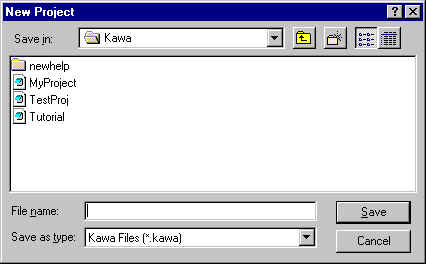
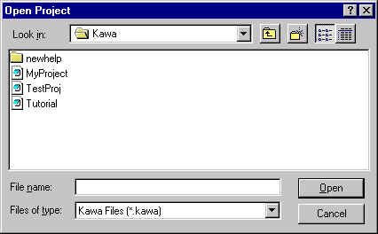
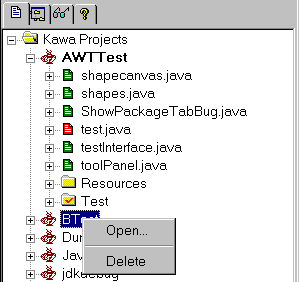

Kawa ProjectKawa Project
Kawa ProjectKawa Project
Last Modified Date - 2/16/99
Please click here for the latest version of this document.
If this is an online version of the document please right click in the browser and select
'Update local Kawa document' to update your local copy of this document
What is a Project ?
In KAWA a Project is a logical collection of files. Various user options and classpaths can be applied to a Project.
How do I create a new Project ?

Under the Project menu, select New and enter the desired name of the Project in the New project dialog. The newly created project will then be added to the Project tab.
Please select Project/Add Files from the Project menu to add files to the project.
How do I add an existing Project ?

Under Project menu, select Open to open the project and the new project will be added to the project tree and opened. The open project is the active project. Also right click on root Projects item and select Add Project to add a project to the project tree. This would however not make the added project the active project and hence not open the project.
How do I Open and Delete a Project in the Project tree ?

Opening a project is as simple as right clicking on the project name and selecting Open. Open project is indicated by bold font and is always at the top of the list. The remaining projects are arranged alphabetically in the tree. There can be only one project open at any given time. All the Project menu options from the main menu are applied to the currently open project. Also selecting Open from the Project menu will add and open the project. In order to delete a project, right click a project and select Delete. Please note that an open Project cannot be deleted.